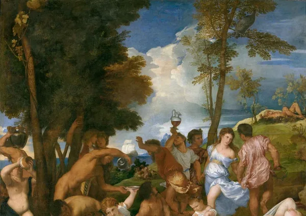

Lit Crit
Review: Drunk by Edward Slingerland
A history of getting hammered

Drunk elegantly cuts through the tangle of urban legends and anecdotal impressions that surround our notions of intoxication to provide a rigorous, scientifically grounded explanation for our love of alcohol. Drawing on evidence from archaeology, history, cognitive neuroscience, psychopharmacology, social psychology, literature, and genetics, Edward Slingerland shows that our taste for chemical intoxicants is not an evolutionary mistake, as we are so often told.
In fact, intoxication helps solve a number of distinctively human challenges: enhancing creativity, alleviating stress, building trust, and pulling off the miracle of getting fiercely tribal primates to cooperate with strangers. Our desire to get drunk, along with the individual and social benefits provided by drunkenness, played a crucial role in sparking the rise of the first large-scale societies. We would not have civilization without intoxication.
The ubiquity of drug use is so striking that it must represent a basic human appetite
Key takeaways
Ancient roots. The desire to alter one's mental state through intoxication is not a recent phenomenon. Archaeological evidence reveals that humans have been using alcohol and other substances for millennia, dating back as far as 7000 BCE in China.
From fermented beverages to hallucinogenic plants, the pursuit of altered states is a constant throughout human history. For our ancestors, inebriation was especially essential, “a robust and elegant response to the challenges of getting a selfish, suspicious, narrowly goal-oriented primate to loosen up and connect with strangers.”
The cooperation challenge. Humans are intensely social creatures, relying on cooperation and mutual support for survival. The challenge for humans is to reconcile our selfish ape nature with the demands of large-scale social cooperation.
Overcoming this tension requires mechanisms for building trust, enforcing norms, and suppressing individual self-interest. Intoxication, as we will see, plays a crucial role in this process.

Estimated number (in billions) of people using tobacco, alcohol and psychoactive drugs
A versatile tool. Alcohol is uniquely suited for temporarily altering brain function. It's easy to produce, consume, and dose, and its effects are relatively predictable. Alcohol targets the brain's prefrontal cortex, reducing cognitive control and promoting relaxation, creativity, and social bonding.
“It is no accident that, in the brutal competition of cultural groups from which civilizations emerged, it is the drinkers, smokers and trippers who emerged triumphant,” Slingerland writes. Human society would not exist without ample lubrication.
If you tasked a cultural engineering team with designing a substance that would satisfy specs aimed at maximizing individual creativity and group cooperation, they would come up with something very much like alcohol.
Distillation and Isolation
Distillation's impact. The invention of distillation has created a new level of risk associated with alcohol consumption. Distilled spirits are far more potent than naturally fermented beverages, making it easier to become dangerously intoxicated.
The rise of isolation. Modern lifestyles have led to a decline in traditional social structures and an increase in solitary activities. This isolation has made it easier to abuse alcohol, as individuals are no longer subject to the same social controls and monitoring.
A toxic combination. The combination of distilled spirits and social isolation has created a perfect storm for alcohol abuse. Without the constraints of traditional social norms, individuals are more likely to develop alcohol dependence and experience its negative consequences.